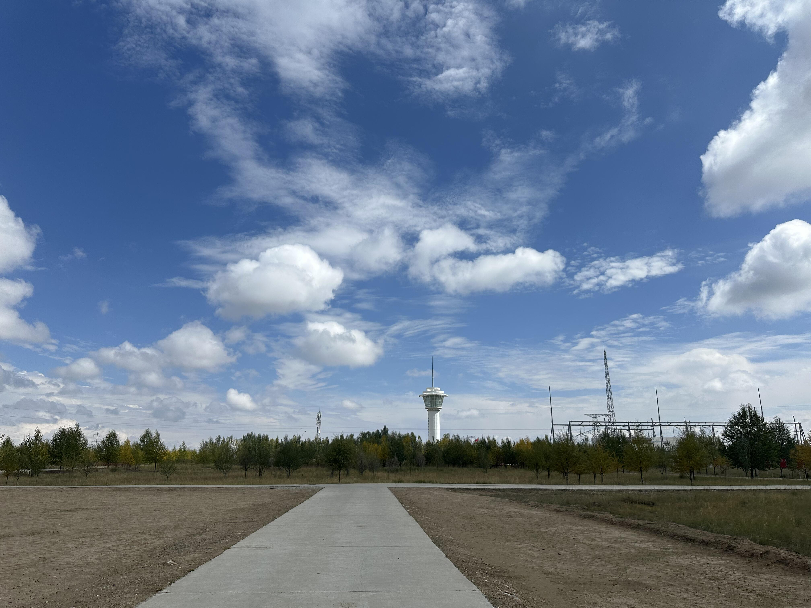
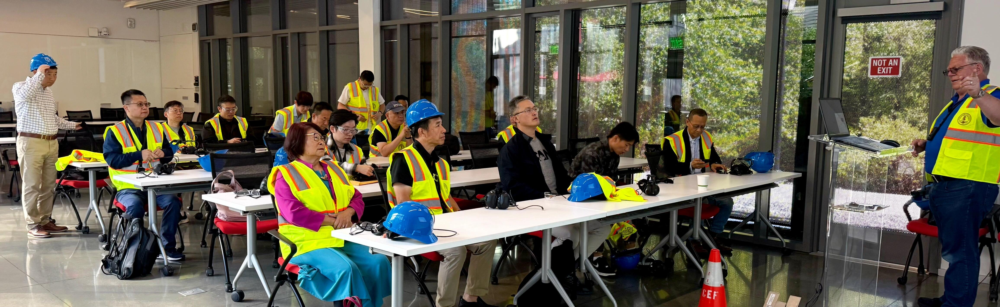
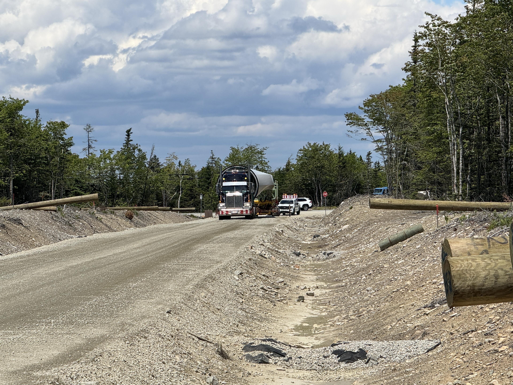
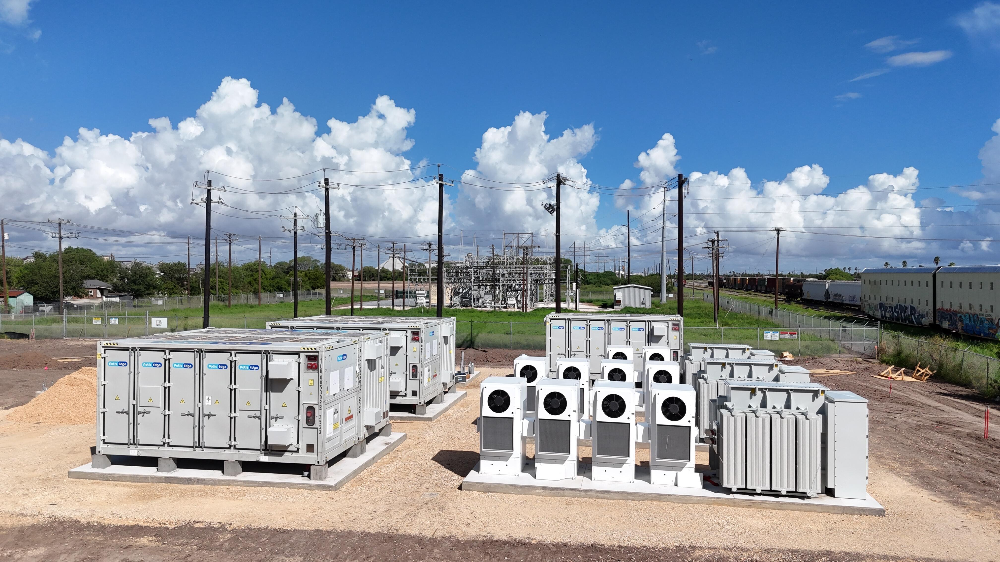

Energy Data Layer
A structured foundation for project, equipment and operational information across the TerraHash ecosystem.
TerraHash Energy is developing a digital foundation designed to connect real-world energy infrastructure with trusted data, verifiable records and future enterprise applications.
The starting point is physical infrastructure. Digital systems are designed to make operating information easier to verify, share and use across trusted business relationships.
Real-world sites, equipment and infrastructure.
Structured project and operating information.
Controlled, traceable and auditable records.
Enterprise workflows and future services.
We are developing practical data capabilities around energy assets first, with optional blockchain-ready components where they add measurable business value.
A structured foundation for project, equipment and operational information across the TerraHash ecosystem.
Consistent digital identities that help organize ownership, location, status and lifecycle records.
Traceable records, timestamps and permission controls designed to support diligence and reporting.
Architecture that can support future approved settlement, reporting or automation workflows where appropriate.

Built around development milestones.
TerraHash is developing the underlying infrastructure, systems and relationships required before digital applications can become useful at scale.
STERRA is TerraHash Energy's internal concept for connecting approved energy-asset records with digital infrastructure. It is currently a technology and ecosystem development concept, not a public token, security or investment product.

Organize source, production and operating data with clear context.

Track equipment records, service events and important lifecycle information.

Support documentation and verification workflows around renewable generation.

Maintain structured records for project development and qualified diligence.

Create controlled ways to share relevant information with approved counterparties.
Modular architecture allows TerraHash to begin with conventional enterprise data systems and add distributed-ledger capabilities only where the business case supports them.
Any future financial, tokenized or settlement functionality would be evaluated separately under applicable legal, regulatory, tax, privacy and compliance requirements.
The roadmap is deliberately staged. Each phase should create useful operating capability before the company commits to the next layer of complexity.
Define practical use cases, technical requirements and compliance boundaries.
Build core asset records, data structures and governance workflows.
Test selected workflows against real infrastructure and partner needs.
Connect qualified operators, technology providers and counterparties.
Advance approved applications only when utility, economics and compliance are established.
TerraHash welcomes technology, infrastructure and strategic partners interested in practical digital systems for the energy economy.
Important: TerraHash Energy does not currently offer or sell any cryptocurrency, token, security or investment product through this website. STERRA is presented solely as a technology and ecosystem concept. References to capital discipline describe the company's development approach and do not represent a specific financing amount, commitment, valuation or guarantee.